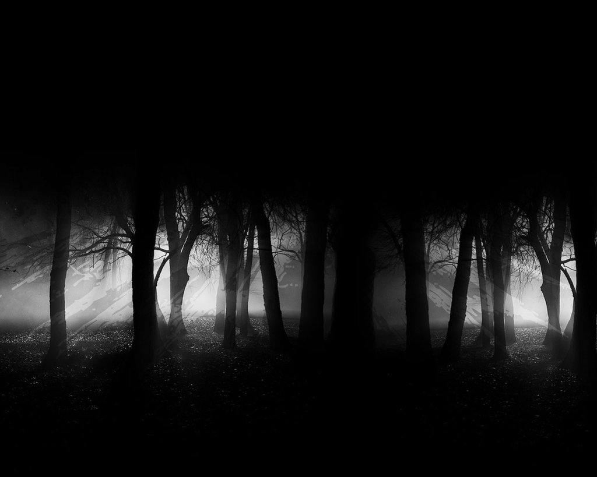

Investigation

Compelled more by curiousity than fear, you decide that perhaps the noise is your best chance at getting out of this mess. One way or another...
You slowly start shuffling your feet towards the groans. You can tell you are getting closer. The groaning is becoming louder faster than before.
You're approaching the source of the noise. You can hear it right in front of you. As you call out, it stops.
Hello? Who's there? Show yourself!
A deep rumbling emerges from the ground beneath you. The awful groaning bellows all around you!
You feel something hard and cold wrap around your ankles. Slithering upwards, tightening its grasp.
IT'S THE PLANTS!! IT'S THE TREES!! THEY'RE ALIVE!!! AAAAAAAAARGGHHHH
The pain become too excrutiating and you pass out.